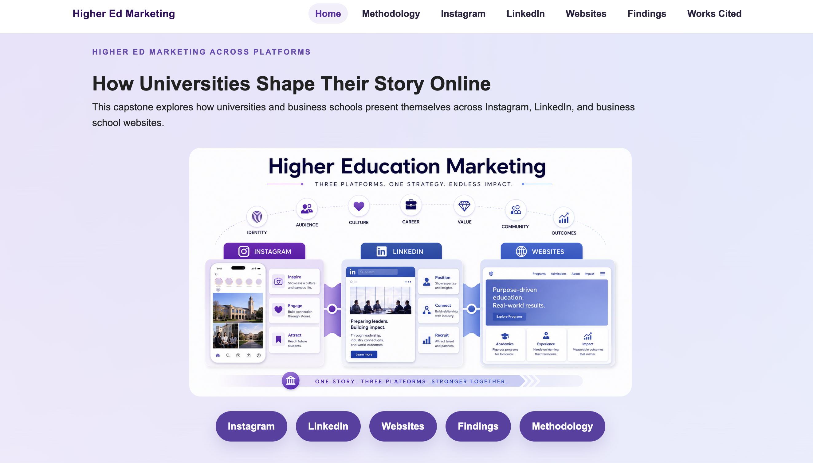
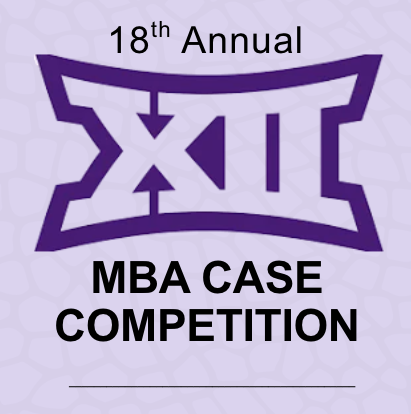

Welcome
Welcome to my portfolio. Here you can explore projects that reflect my work in web design, data analysis, digital communication, and visual design.
About Me
I support Graduate Career Management and Neeley & Associates at TCU's Neeley School of Business. For more than 15 years, I have worked in administrative roles across the military, private sector, and higher education, helping teams stay organized and focused.
As a DCDA student, I am building skills in web design, data analysis, and digital communication that I can apply to my work in higher education. I especially enjoy projects that help connect people with useful information, services, and resources.
My Work
These projects combine my DCDA coursework with professional experience and show how I use digital tools to organize information, communicate ideas, and create useful resources.
Skills
-
HTML
I use HTML to create structured web pages and organize content for clear navigation and readability.
-
Data Analysis
I use data analysis to explore questions, identify patterns, and create visualizations that make information easier to understand.
-
Digital Communication
I create digital content that combines information and visual design to communicate clearly with different audiences.
Projects
-
Higher Ed Marketing Across Platforms

Built a capstone website examining how universities and business schools present themselves across Instagram, LinkedIn, and their websites. I compared patterns across platforms and presented my research and findings in a designed, navigable website.
-
Personal Portfolio
I am building this responsive portfolio in WRIT 40363 using HTML, CSS, Flexbox, Grid, and GitHub Pages. The project gives me a place to practice web design while documenting and presenting work from my DCDA coursework.
-
Big 12 Case Competition Program

Designed a program in Canva for the 18th Annual Big 12 MBA Case Competition hosted by TCU Neeley. I organized event information into a polished visual guide that participants and guests could easily follow throughout the competition.
Contact
You can reach me by email or through LinkedIn and GitHub.